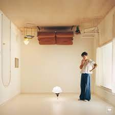

<ion-content [fullscreen]="true">
  

  <div class="titulo">Musica</div>

  <div class="contenedor">
    <hr class="linea">
  </div>
 
  
  <ion-card>
    
    <ion-card-content>
      <ion-list>
        <ion-item>
          <ion-thumbnail slot="start">
            
          </ion-thumbnail>
          <ion-label>New Romantics<ion-icon name="play" *ngIf="!isPlaying1" (click)="playMusic1()"></ion-icon>
            <ion-icon name="pause" *ngIf="isPlaying1" (click)="pauseMusic1()"></ion-icon>
          </ion-label>
        </ion-item>
  
        <ion-item>
          <ion-thumbnail slot="start">
            
          </ion-thumbnail>
          <ion-label>Mirrorball<ion-icon name="play" *ngIf="!isPlaying2" (click)="playMusic2()"></ion-icon>
            <ion-icon name="pause" *ngIf="isPlaying2" (click)="pauseMusic2()"></ion-icon>
          </ion-label>
        </ion-item>
  
        <ion-item>
          <ion-thumbnail slot="start">
            
          </ion-thumbnail>
          <ion-label>Little Freak<ion-icon name="play" *ngIf="!isPlaying3" (click)="playMusic3()"></ion-icon>
            <ion-icon name="pause" *ngIf="isPlaying3" (click)="pauseMusic3()"></ion-icon></ion-label>
        </ion-item>
  
        <ion-item lines="none">
          <ion-thumbnail slot="start">
            
          </ion-thumbnail>
          <ion-label>All this time<ion-icon name="play" *ngIf="!isPlaying4" (click)="playMusic4()"></ion-icon>
            <ion-icon name="pause" *ngIf="isPlaying4" (click)="pauseMusic4()"></ion-icon></ion-label>
        </ion-item>
      </ion-list>
    </ion-card-content>
  </ion-card>
</ion-content>

<ion-tab-bar  class="fixed-bottom">
  
</ion-tab-bar>

<div class="circle">
  <ion-icon name="musical-notes-outline"></ion-icon>
</div>
